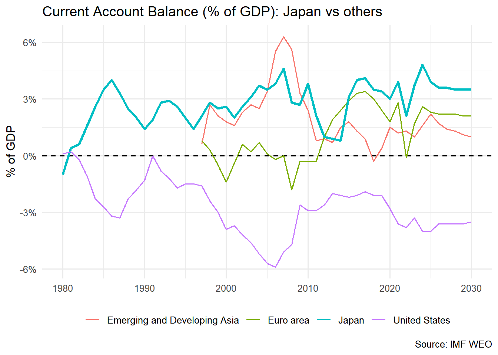

df = fread("../data/09 bop/imf_ca.csv",header = T)
df = melt(df,id.vars="region",variable.factor = F)
df[,value:=as.numeric(value)]Warning in eval(jsub, SDenv, parent.frame()): NAs introduced by coerciondf[,variable:=as.integer(variable)]
df[,future:=as.character(variable>=2025)]
keep = c("Japan","Euro area","United States",
"Emerging and Developing Asia")
plot_df = df[region%in%keep&!is.na(value)]
ggplot(plot_df,
aes(variable, value,
group = region,
colour = region,
size = region == "Japan")) +
geom_hline(yintercept = 0, linetype = "dashed") +
geom_line() +
scale_size_manual(values = c(`TRUE` = 1.2, `FALSE` = 0.6), guide = "none") +
scale_y_continuous(labels = function(x) paste0(x, "%")) +
labs(title = "Current Account Balance (% of GDP): Japan vs others",
x = NULL, y = "% of GDP", colour = NULL,
caption = "Source: IMF WEO") +
theme_minimal(base_size = 12) +
theme(legend.position = "bottom") Warning: Using `size` aesthetic for lines was deprecated in ggplot2 3.4.0.
ℹ Please use `linewidth` instead.